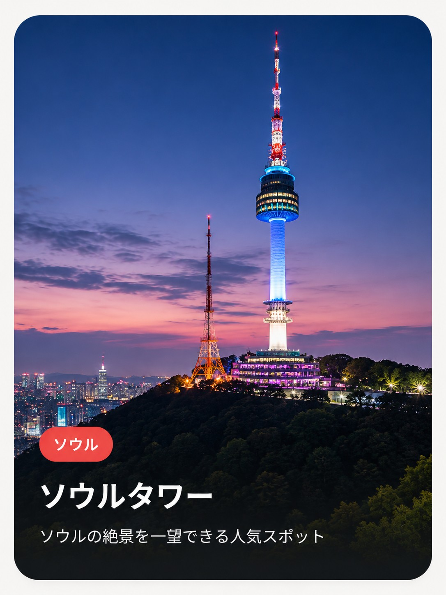

- 住所
- ソウル特別市 龍山区 南山公園キル105
- 訪問時間・所要
- 日没前後（夕景から夜景への切り替わりがベスト）。展望台込みで1.5〜2時間
- 目安予算
- 展望台入場料：大人約21,000ウォン／子供約16,000ウォン（ケーブルカーは別料金）
- アクセス
- 地下鉄4号線 明洞駅3番出口から徒歩約10分でケーブルカー乗り場
💡 平日10:00〜22:30、週末〜23:00（チケットは終了30分前まで）。展望台テラスの「愛の南京錠」も撮影スポット。
ソウルの絶景を一望できる人気スポット

💡 平日10:00〜22:30、週末〜23:00（チケットは終了30分前まで）。展望台テラスの「愛の南京錠」も撮影スポット。